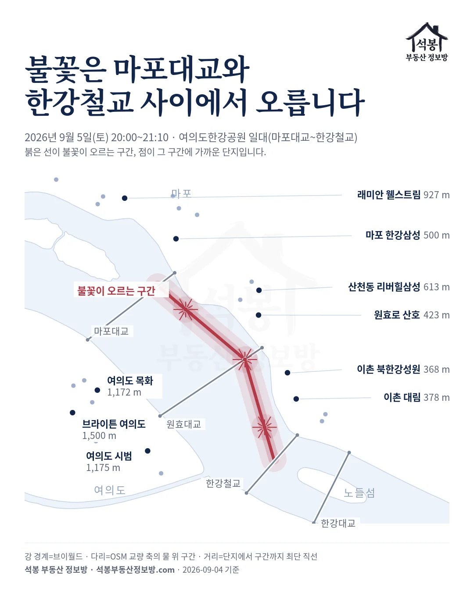
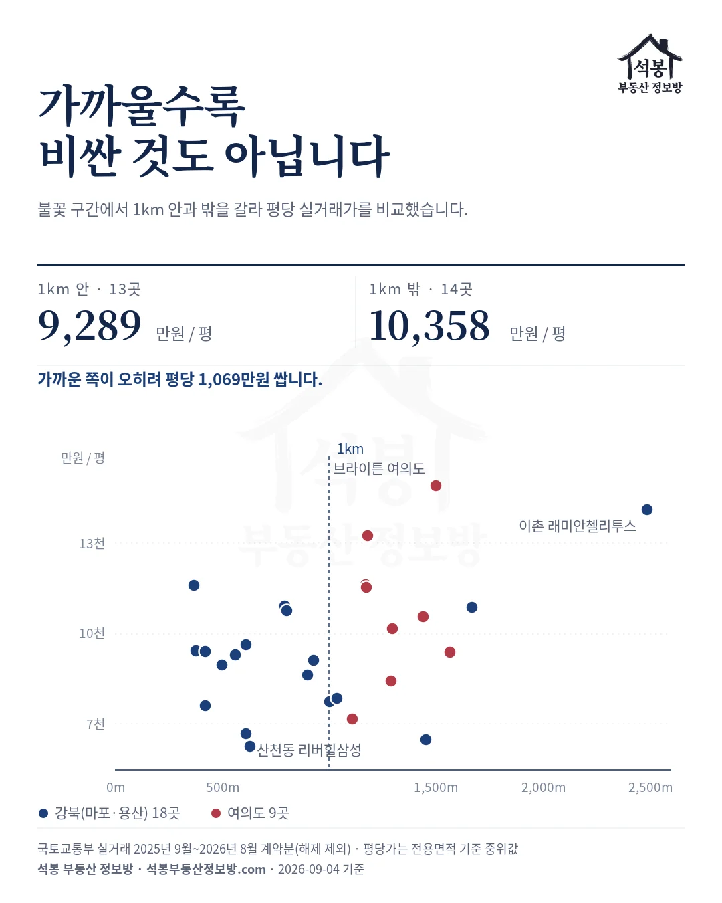
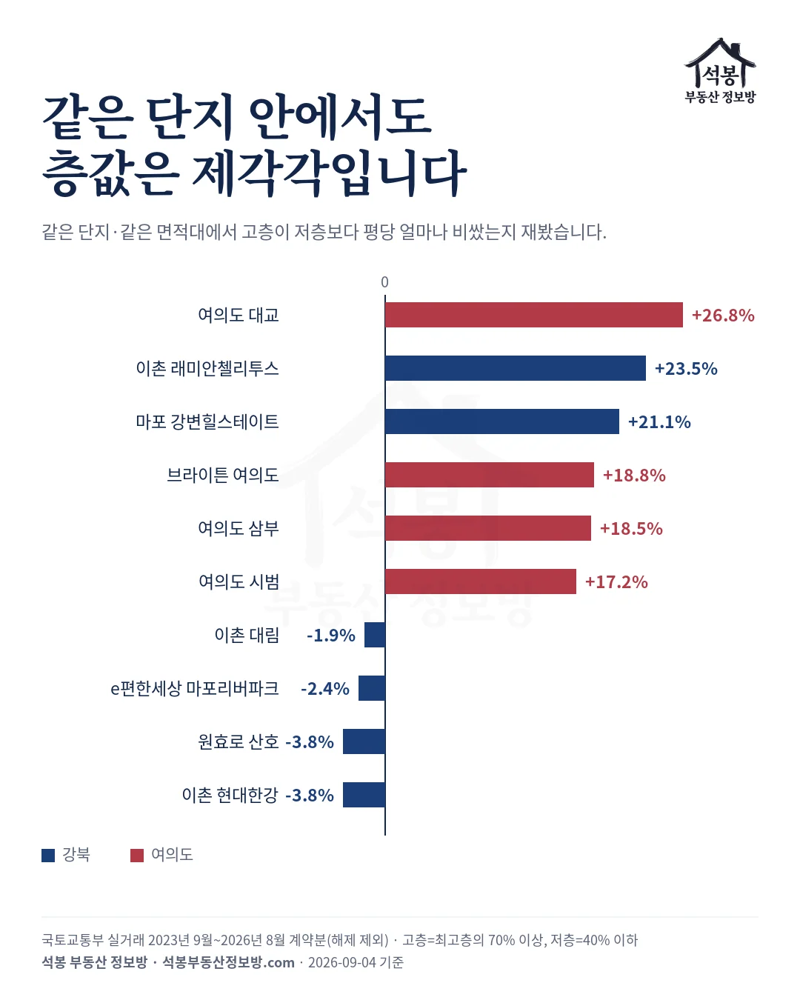
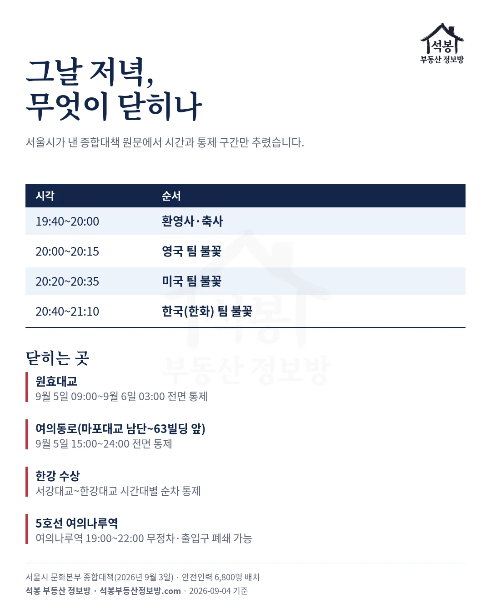

망원동 어느 아파트 주민이 부동산 커뮤니티에 남긴 후기가 있습니다. 불꽃축제 날 "엄청난 연기가 보이고 요란한 소리만 들리더라"는 것입니다. 그 단지에서 불꽃이 오르는 구간까지 재보니 3,747m, 소리가 11초 늦게 도착하는 거리였습니다.
2026년 9월 5일 토요일 저녁 8시입니다. '우리 집에서 잘 보인다'는 말이 어디까지 사실인지, 기사와 커뮤니티 후기에 이름이 나온 단지를 모아 좌표로 거리를 재봤습니다.
하나. 인터넷은 이 집들을 꼽았습니다
먼저 이름부터 모았습니다. 2024년 한 언론이 '불꽃뷰 아파트'로 소개한 곳은 브라이튼 여의도, 마포 한강삼성, 이촌 대림이었고, 기사 안에서 북한강성원과 현대한강도 함께 거론됐습니다.
부동산 커뮤니티 쪽은 결이 조금 다릅니다. 여의도 시범아파트 게시판에는 "여의도불꽃축제 최고명당"이라는 글이 올라와 있고, 소셜미디어에는 원효대교와 마포대교 북단을 추천하며 원효로 산호, 산천동 강변삼성을 찾아보라는 글이 돌았습니다.
여기에 우리가 가진 지도에서 한강에 접한 단지를 더해 스물일곱 곳을 후보로 세웠습니다. 여의도 아홉 곳, 마포와 용산 열여덟 곳입니다.
가입하시면 지역 시장조사 보고서(약식)를 2회 무료로 요청하실 수 있습니다.
둘. 좌표로 재보니 여의도가 아니었습니다
서울시가 낸 안내에 행사 장소는 여의도한강공원 일대, 마포대교부터 한강철교까지로 적혀 있습니다. 그 구간을 선으로 잡고 스물일곱 곳에서 최단 직선거리를 쟀습니다.
| 단지 | 거리 | 소리 도착 | 평당(전용) |
|---|---|---|---|
| 이촌 북한강(성원) | 368m | 1.1초 | 11,602만원 |
| 이촌 대림 | 378m | 1.1초 | 9,424만원 |
| 원효로 강변삼성스위트 | 421m | 1.2초 | 7,611만원 |
| 원효로 산호 | 423m | 1.2초 | 9,412만원 |
| 마포 한강삼성 | 500m | 1.5초 | 8,961만원 |
| 이촌 현대한강 | 562m | 1.7초 | 9,289만원 |
| 산천동 리버힐삼성 | 613m | 1.8초 | 6,686만원 |
| 래미안 마포리버웰 | 795m | 2.3초 | 10,913만원 |
| 여의도 리첸시아 | 1,109m | 3.3초 | 7,176만원 |
| 여의도 시범 | 1,175m | 3.5초 | 11,535만원 |
| 브라이튼 여의도 | 1,500m | 4.4초 | 14,914만원 |
1km 안에 든 열세 곳이 전부 마포와 용산이었습니다. 여의도에서 가장 가까운 리첸시아가 1,109m, '불꽃뷰'로 가장 자주 불리는 브라이튼 여의도는 1,500m로 오히려 뒤쪽입니다.

지도를 펴면 이유가 바로 보입니다. 여의도 한강공원은 섬의 북동쪽 강변을 따라 놓여 있는데, 여의도 아파트 지구는 섬의 서쪽과 남쪽에 몰려 있습니다.
같은 섬에 있어도 여의도공원과 증권가 빌딩을 등지고 앉은 셈입니다. 강 건너 이촌동과 원효로, 마포 강변은 강폭이 그대로 관람 거리가 됩니다.
셋. 후기와 거리가 겹친 여섯 곳
이제 두 목록을 포개 봅니다. 기사나 커뮤니티에 이름이 나왔고, 동시에 1km 안에 든 단지가 여섯 곳입니다. 그리고 여섯 곳이 전부 강 건너였습니다.
가장 앞자리는 북한강(성원) 368m와 이촌 대림 378m입니다. 둘 다 63빌딩을 정면으로 마주 보고, 아파트와 강 사이에 시야를 막는 구조물이 없습니다.
그다음이 원효로 산호 423m와 강변삼성스위트 421m, 마포 한강삼성 500m, 이촌 현대한강 562m입니다. 전부 소리가 2초 안에 닿는 거리입니다.
여의도 쪽에서는 시범이 1,175m로 가장 앞입니다. 불꽃은 높이 오르니 보이기는 잘 보입니다. 다만 낮게 터지는 불꽃은 가려지고 소리가 3.5초 늦게 오는 자리라는 점은 알고 보는 편이 낫습니다.
넷. 잘 보이는 집이 비싼 집은 아닙니다
여기서 한 가지가 뒤집힙니다. 1km 안 열세 곳의 평당 중위가 9,289만원, 1km 밖 열네 곳이 10,358만원입니다. 가까운 쪽이 오히려 평당 1,069만원 쌉니다.

극단이 선명합니다. 613m로 손꼽히게 가까운 산천동 리버힐삼성이 평당 6,686만원인데, 2,487m 떨어진 이촌 래미안첼리투스가 평당 14,127만원입니다.
당연한 이야기이지만 한 번 짚고 갑니다. 1년에 한 번 있는 불꽃놀이는 집값을 만들지 않습니다. 연식과 학군, 교통, 정비사업 단계가 값을 만들고 조망은 그 위에 얹히는 항목입니다.
조망 값을 굳이 보려면 같은 단지 안에서 층으로 갈라야 합니다. 같은 면적대에서 고층과 저층의 평당 중위를 비교했더니 -3.8%에서 +26.8%까지 벌어졌습니다. 층값이 큰 쪽은 고층에서만 시야가 열리는 단지이고, 작거나 마이너스인 쪽은 저층에서도 이미 강이 보이는 단지입니다.

그날 저녁, 알고 가면 좋을 것
불꽃쇼는 20:00부터 21:10까지입니다. 영국 팀 15분, 미국 팀 15분, 한국 팀 30분 순서입니다. 9월 4일 금요일에는 전야제가 여의도와 이촌한강공원에서 열립니다.
닫히는 곳이 많습니다. 원효대교는 9월 5일 09:00부터 9월 6일 03:00까지 전면 통제되고, 여의동로는 마포대교 남단부터 63빌딩 앞까지 9월 5일 15:00부터 24:00까지 막힙니다. 5호선 여의나루역은 19:00부터 22:00 사이 무정차로 지나갈 수 있습니다. 한강 수상도 서강대교에서 한강대교 사이가 순차로 통제되고, 안전인력 6,800명이 배치됩니다.

마지막으로 하나 더 있습니다. 축제 때마다 중고 거래 플랫폼에 한강뷰 집의 거실이나 베란다를 빌려준다는 글이 올라오고, 2025년에는 한 자리에 48만원, 55만원이 붙은 사례가 기사로 다뤄졌습니다.
이런 거래는 주택 임대나 숙박업의 경계에 걸릴 수 있습니다. 그리고 당일 강변 단지들은 대부분 입주민 외 출입을 막습니다. 아는 집이 있어 초대받은 경우가 아니라면 남의 아파트 옥상은 생각하지 않는 편이 낫습니다.
원자료: 서울시 문화본부 「2026 서울세계불꽃축제 9.4.(금)~9.5.(토) 교통통제 안내」(2026년 9월 3일), 한화 서울세계불꽃축제 공지(2026년 8월 21일), 국토교통부 아파트 매매 실거래. 기준일 2026년 9월 4일
시세는 2025년 9월~2026년 8월 계약분(해제 제외) 중위값이고, 층 비교만 표본 확보를 위해 2023년 9월~2026년 8월 계약분을 썼습니다. 면적·평당가는 전용면적 기준입니다
거리는 마포대교 중앙~원효대교 중앙~한강철교를 잇는 선까지의 최단 직선이며, 좌표는 브이월드(공간정보 오픈플랫폼) 자료를 그대로 썼습니다. 소리 도착은 음속 340m/s로 환산했습니다
⚠️거리는 조망을 보장하지 않습니다. 동·향·층·앞 건물에 따라 같은 단지에서도 갈리고, 실제 바지선 위치는 해마다 달라집니다. 투자 권유가 아닙니다.